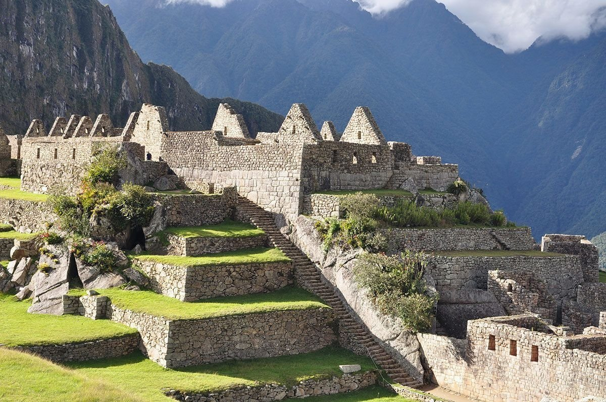
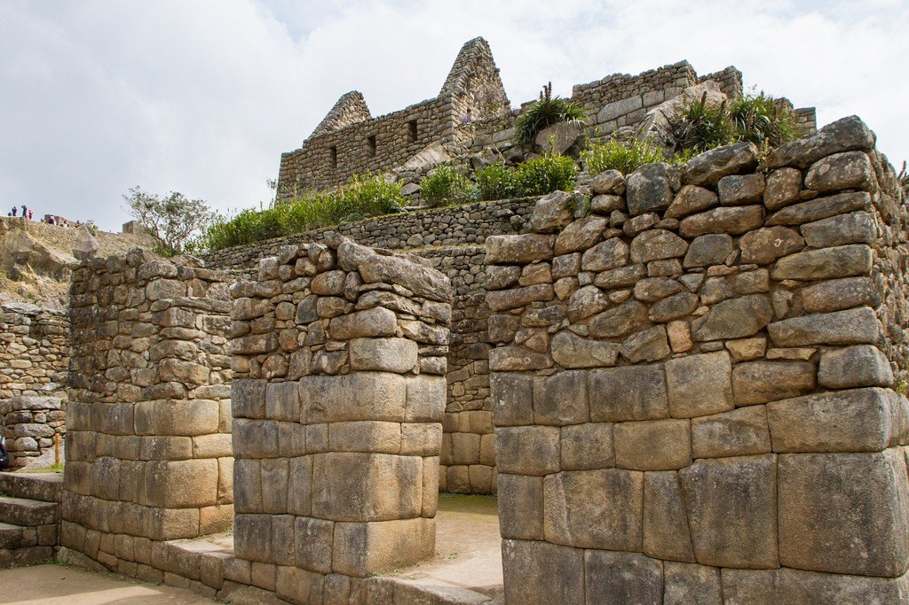
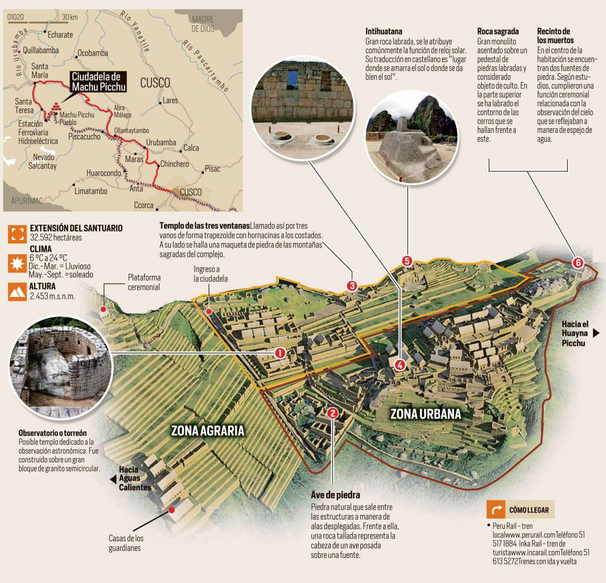
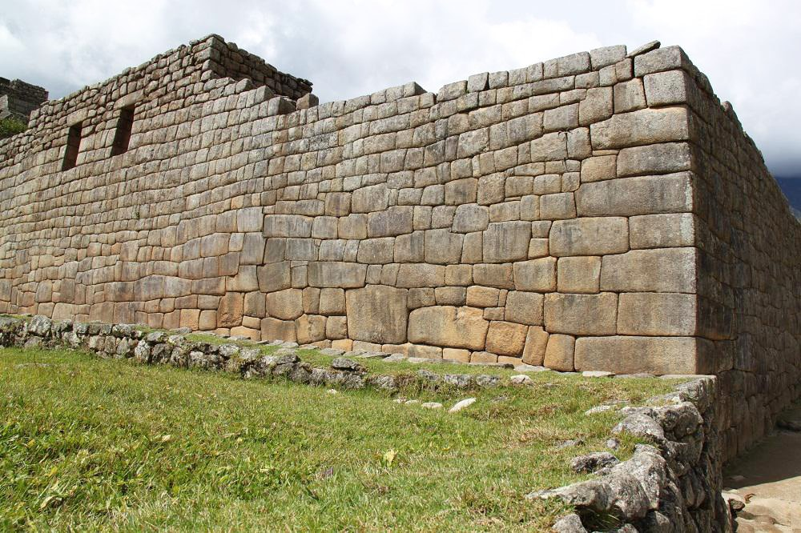
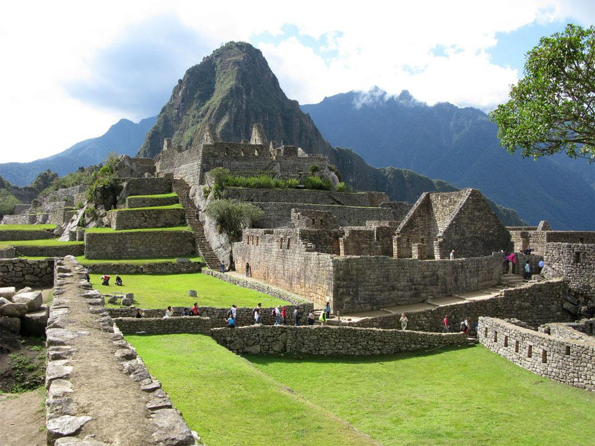
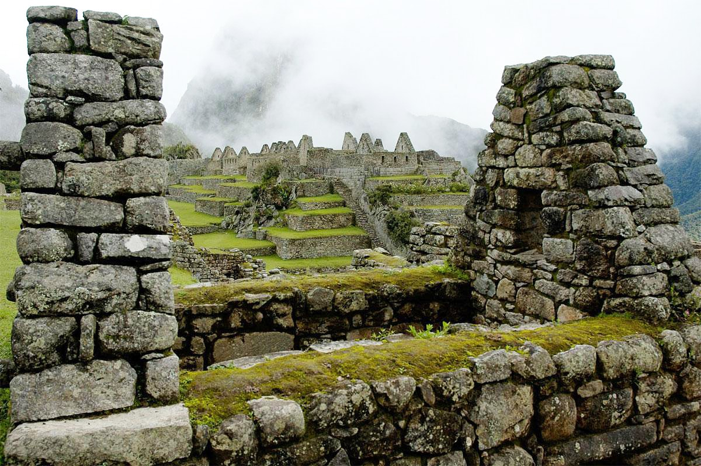
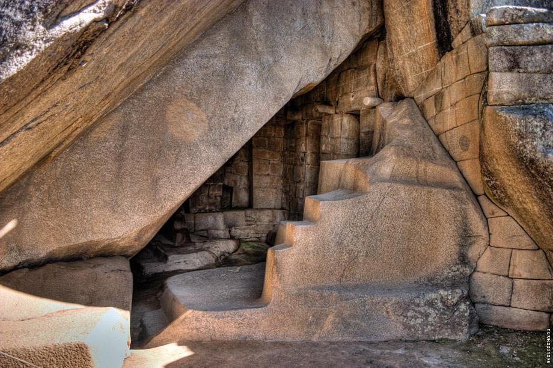
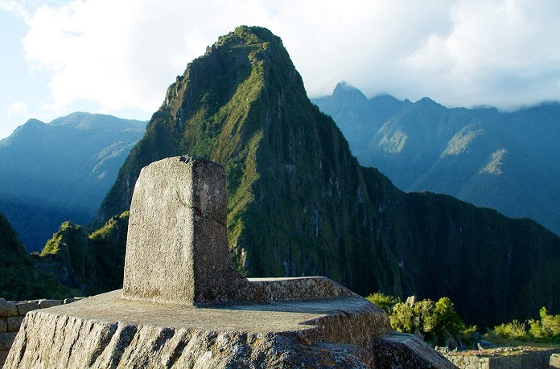
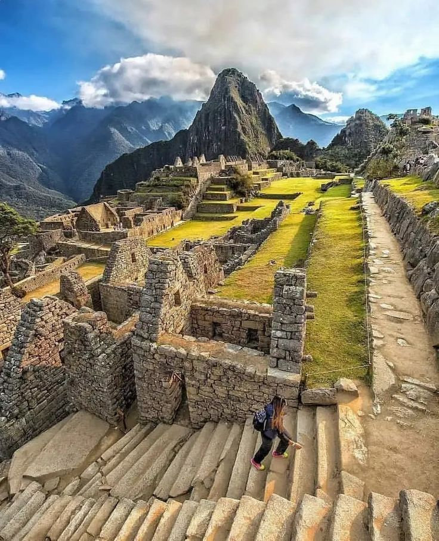

Мачу-Пикчу
Мачу-Пикчу — легендарный город инков, который укрыт в сердце Анд
на высоте 2400 м. Это древнее поселение между двумя горными пиками и по сей день хранит свои тайны. При взгляде на руины города
Мачу-Пикчу, эффектно проступающие среди покрытых джунглями горных пиков и крутых склонов и террасами спускающиеся в долину, у
туристов перехватывает дыхание.
История строительства

Основание города историки связывают с именем Верховного инки Пачакутека
(1438-1471 гг.), т.е. официальной датой основания Мачу-Пикчу считается середина
XV века. Однако есть множество фактов, косвенно свидетельствующих о гораздо более древнем возрасте этого города.
Говоря о возрасте Мачу-Пикчу, историки приводят в качестве аргумента данные радиоуглеродного анализа, что удовлетворяет
основную часть широкой публики. Однако радиоуглеродный анализ применим лишь к органике, т.е. с его помощью в принципе невозможно
определить возраст камня и построек из него. Анализируется найденная возле этого камня органика (например,посуда), и делается по
меньшей мере странный вывод о том, что если кувшин датируется XV веком, то и постройка, вкоторой он находится, тоже имеет этот возраст.
Это как если через 1000 лет археологи станут определять возраст Московского кремля по какой-нибудь случайной тарелке из президентского
сервиза.

Нельзя не упомянуть, что в городе можно обнаружить два совенршенно разных типа построения зданий - постройки из тщательно
обработанных блоков, уложенных без какого-либо раствора и конструкции из плохо обработанного или вообще необработанного камня на
глиняном растворе. Историки предполагают, что таким образом постройки делились на здания для "знати" и "простых смертных". Если
посмотреть на карту города, то несложно согласиться с этим. В центре находились предполгаемые храмы и дворцы, а по окраинам халупы. Но такая
логика часто нарушается, поэтому нельхя точно сказать. по какому принципу и кем застраиваля этот таинственный город.
Открытие затерянного города

В 1911 году Х. Бингем, историк из Йельского университета, отправился в экспедицию по Андам. Интересно, что он искал другой старинный
город инков — Вилкабамбу, а Мачу-Пикчу нашел по счастливому стечению обстоятельств. Остановившись на ночлег в одной из индейских семей,
он разговорился с местным мальчиком. За символическое вознаграждение в 1 соль тот не только рассказал ему о руинах старого города, но
и проводил до нужного места. Увидев старинные развалины, Бингем сразу понял, что совершил великое открытие. С этого момента начались
многочисленные экспедиции в старинный город инков, где работу вели ученые со всего мира.
Население и предназначение Мачу-Пикчу

В Мачу-Пикчу около 200 построек, из чего археологи делают вывод, что на пике его население должно было составлять около 1000 человек.
Вместе с тем, уже в середине XV века город резко опустел (почему — так никто и не знает), и Бингхэму удалось найти в нем лишь 173
человеческих скелета. Исследовательская деятельность на территории города показала, что все его жители исчезли практически
одновременно около 1532 года. История не знает точного ответа на вопрос, почему, однако предположительно причиной гибели более
тысячи жителей Мачу-Пикчу стала эпидемия оспы, которую привезли с собой испанские завоеватели. Также существуют предположения,
что инки покинули город задолго до прибытия конкистадоров.
Говоря о предназанчении города, нельзя ничего утверждать точно. Существует лишь огромное количесвто различных догадок и теорий,
но, к сожалению, все они далеки от правды. Предлагаем Вам ознакомиться с нкоторыми из них:

Согласно первой теории, город являлся родиной и последним оплотом Инков во время их борьбы с конкистадорами (в период конца XV —
XVI веков испанские или португальские завоеватель территорий Нового Света в эпоху колонизации Америки). Но только потом стало
известно, что последним пристанищем загадочного древнего народа стал город Эспириту-Пампа.
Храм, построенный для Солнечных Дев – так долго именовали Мачу-Пикчу. Ученые предположили, что он был основан для женского
религиозного ордена, поклонения им. Много лет назад американец Джордж Итон обнаружил на раскопках города огромное количество
останков женских скелетов. Но сделанное предположение оказалось ложным, и выяснилось это лишь в 2000 году. Тогда были проведены
более подробные исследования костей. Оказалось, что женское население в городе не преобладало.
В 1991 году американец Рейнхард (знаменитый археолог) обратил внимание на то, что город построен на вершине горы, у подножия которой
протекает бурная река Урубамба. В итоге был сделан вывод о том, что данный город имел священное значение для Инков. Рейнхард
предположил, что Мачу-Пикчу объединял Небо и Землю, являлся неким «священным началом» для древнего народа, символизировал вечность,
деталь мифологического ландшафта. Но подобные размышления весьма пространны и, по мнению других антропологов и археологов не имеют
ничего общего с реальным предназначением Мачу-Пикчу.
Интересные факты

1. Мачу-Пикчу не для всех
С целью сохранения древнего города в 2011 году было установлено ограничение на его посещение — не более 800 человек в день.
2. Открыли дважды?
Официально Х. Бингем считается «первооткрывателем» Мачу-Пикчу, однако до него там бывали и другие люди. Подтверждением,
например, служит оставленный на руинах текст, датированный 1902 годом и подписанный Августином Лизаррага.
3. Спасение от землетрясений
Еще одним секретом города является уникальная конструкция некоторых зданий. Изначально археологи и ученые предполагали, что они
построены по неправильному проекту, но наблюдения за конструкцией открыло любопытный факт. При землетрясении камни этих зданий
двигаются в разные стороны и потом становятся на место, тем самым спасая конструкцию от разрушения.

4. Возведение города
Согласно сложившимся легендам, для постройки этого города людям приходилось носить в гору (2450 м) камни весом более 20 кг.
Кстати, что важно – никакой транспорт для облегчения участи строителей не использовался. Считается, что сотни людей просто
толкали неподъемные валуны вверх по склону крутой горы, помогая себе лишь кое-какими примитивными инструментами.
5. Астрономия в жизни инков
Увлечение инков астрономией оказало огромное влияние на их цивилизацию и непосредственно на строительство города. С ее помощью
они могли определять, например, лучшее время для посадки и сбора урожая. Показательным является священный камень Intihuatana,
который был возведен в таком месте, что служил инкам астрономическими часами и календарем.

6. Пиво - вред
Часть Мачу-Пикчу была уничтожена во время съемок рекламы пива.
В 2000 году здесь снимался рекламный ролик о пиве Cusqueña, когда кран рухнул на камень Интиуатана, одну из самых важных святынь
города. Камень треснул. "Вероятно, ущерб можно исправить, но он никогда не будет прежним", - сказал в интервью The Guardian археолог
Луис Барреда Мурильо. Естественно, правительство Перу не обрадовалось этому инциденту, а историки сразу же призвали запретить коммерческую съемку в этом месте.
7. Обсерватория прошлого
По городу можно определить летнее и зимнее солнцестояние. Мачу-Пикчу был спроектирован так, чтобы можно было следить за солнцем и
звездами. Один из примеров - Храм Солнца, где, как считается, проживал император Пачакутек. Каждый год во время зимнего солнцестояния
луч света проходит через окно и образует идеальный прямоугольник на гранитной плите. Другой пример - Интимай, пещера, расположенная чуть
ниже главных руин. В большинстве дней недели пещера полностью темная. Но на рассвете в течение 10 дней до и после летнего солнцестояния
солнце освещает заднюю стену пещеры. Недавние исследования показали, что все это не было случайным. Эти места действительно
в качестве астрономических обсерваторий.

8. Золото инков
Считается, что когда жители увидели испанских завоевателей, они приняли их за богов и принесли им в дар множество сокровищ.
Но поскольку испанцы относились к ним, как к дикарям, они не оценили поступка инков, а наоборот стали беспощадно истреблять их.
Казнив последнего императора Мачу-Пикчу, конкистадоры решили спрятать одну часть золота в неизвестном месте, а другую увезли вместе
с собой на родину.
9. Мировая империя
В течение 1400-х лет Империя инков была крупнейшей империей мира.Ее территория занимала земли, протяженностью 2500 миль с севера на
юг, а население насчитывало более 10 миллионов человек. Несмотря на свое величие. инки не имели собственной письменности
10. Кто же строил?
до середины идет аккуратная кладка блоков идеальной формы, а другая половина - крупные грубые блоки, сложенные в виде показала.
Это распространяется как вертикально, так и горизонтально.
Экскурсии
Кому-то может показаться, что из-за труднодоступности в Мачу-Пикчу мало экскурсий, а туристов практически нет. На самом же делае
это достаточно популярное место. В связи с этим экскурсии бронируются за 3 месяца, а на входе стоит ограниччение
по количеству туристов. Предлагаем вам ознакомиться с самыми востребованными экскурсиями
Куско - Священная Долина - Ольянтайтамбо - Агуа Калиентес - Мачу Пикчу
Цена: 260 долларов США
Исследуйте и насладитесь Священной долиной Инков, и также старинной цитаделью Мачу-Пикчу за 2 дня и 1 ночь. Вы откроете для себя
величественные археологические памятники Писака и Оллантайтамбо, а также совершите увлекательную поездку на поезде в Агуас-Кальентес,
также известный как Мачу-Пикчу-Пуэбло.
В стоимость экскурсии включены:
- Экскурсия в Священную долину (мы посетим археологические раскопки Писак и Оллантайтамбо)
- Билет на поезд из Ольянтайтамбо в Агуас Кальентес (19:04)
- Билет на поезд из Ольянтайтамбо в Агуас Кальентес (19:04)
- Ночь в общем хостеле с завтраком в Агуас-Кальентес
- Вход в археологические раскопки Мачу Пикчу
- 2 часа с гидом в Мачу Пикчу
- Билеты на поезд из Агуас-Кальентес - Ольянтайтамбо (класс Экспедиция) (18:20)
- Трансфер от вокзала Олланта до Куско (площадь Реджохио)
В стоиомть данной экскурсии не входят: посещение достопримечательностей Священной долины (общий билет 130,00 солей (40 долларов) и частичный билет 70,00 солей (22 доллара).
Билеты на автобус вверх и вниз из Агуас Кальентес до Мачу-Пикчу (+12 долларов в одну сторону).
Посещение гор Мачупикчу / Хуайнапикчу (+20 долларов).
Вход на горячие источники Агуас Кальентес 20,00 солей (6 долларов).
Питание.
Страховка.
Активный тур в Перу с Мачу-Пикчу
Цена: 1790 долларов США
Этот тур подойдет любителям активного отдыха, ведь в течение 15 дней вы будете путшествовать по Перу. В тур входит не только
посещение Мачу-Пикчу, но также и Салкантай трека,нескольких впечатляющих археологических памятников инков и восхождением к Радужным горам на 5100 метров.
Протяженность пути составит 100 километров. так что неподготовленные люди вряд ли смогут выдержать такое путешествие.
В стоимость экскурсии включены: